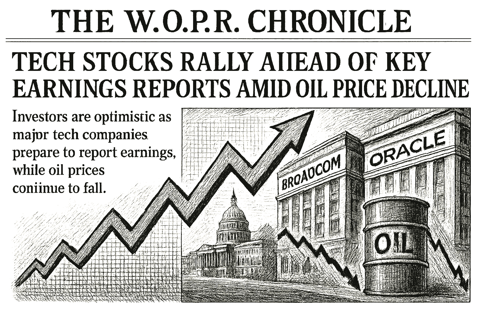

SPY
Current: $774.44Change: +11.81 (+1.55%)
Updated:
Source: yahoo_chartFreshness: fresh


Investors are optimistic as major tech companies prepare to report earnings, while oil prices continue to fall.

Today's Headline: Tech Stocks Rally Ahead of Key Earnings Reports Amid Oil Price Declines
Setup: Investors are optimistic as major tech companies prepare to report earnings, while oil prices continue to fall.
Primary Topic: Earnings Season and Oil Prices
Specific Development: Tech stocks are experiencing a rally as investors anticipate earnings reports from major companies like Broadcom and Oracle, while oil prices are declining due to geopolitical concerns.
Why Today Is Different: Today's market sentiment is buoyed by strong expectations for tech earnings, contrasting with the ongoing decline in oil prices, which could signal economic weakness.
Secondary Topics: Oil Prices; Tech Earnings
Tone: optimistic
Sectors: Technology; Energy
Companies: Broadcom; Oracle
Commodities: Oil
Countries Or Regions: United States
Macro Themes: Earnings Season; Geopolitical Tensions
Why This Story: The interplay between tech earnings and oil price movements is critical for market sentiment and investment strategies.
Why This Matters: Broadcom, Oracle Earnings to Test Cloud Infrastructure's AI-Driven Momentum is the clearest current evidence-led frame for Joshua's observation-only review; missing facts remain explicit intelligence gaps.

Summary: Overnight, major tech stocks rallied in anticipation of earnings reports, while oil prices fell due to geopolitical tensions.
What Happened Overnight: Tech stocks gained momentum, with QQQ and SPY showing significant increases.
What Changed Materially: Oil prices have continued to decline, impacting energy sector sentiment.
Which Assets Sectors Are Affected: Technology and Energy sectors are primarily affected.
Whether It Looks Like Noise Or A Real Regime Input: The rally in tech stocks appears to be a significant regime input rather than mere noise.
Why This Matters: Joshua can use verified cross-asset moves and deterministic risk context while keeping causation explicitly unresolved.

No high-priority earnings expectation block is supported by the current canonical snapshot.

- WOPR learning pipeline: Collecting samples
- Candidates evaluated 24h: 0
- Current gate: Evidence
- Notification ledger events in 24h: 29
- Pending orders created/canceled/filled/expired: 9/5/2/0
- Pending lifecycle interpretation: Pending-order cancellations have trackable reasons and no obvious rapid churn pattern.
- Portfolio risk: Label: High / Score: 100.0
- Latest intelligence gap report: intelligence_gap_report_2026-10-04.pdf
Why This Matters: The active gate is Evidence, so the key question is why candidates are stopping before approval, not how to force trades.

- Sentinel role: infrastructure and operational status only.
- State: ONLINE
- Last successful validation: 2026-10-07T14:13:16.438078+00:00
- Payloads accepted/rejected: 24625/0
- Node health score: 100
Why This Matters: Sentinel is ONLINE, so Joshua should use its context only to the extent the latest accepted pulse is fresh and authenticated.

CANDIDATES MOVING THROUGH JOSHUA'S INVESTMENT-REVIEW WORKFLOW
FROZEN DAILY BRIEF SNAPSHOT | 2026-10-07T14:13:01.050806+00:00
QUEUE SUMMARY | Investment Ready: 0 | Waiting for Price: 0 | Waiting for Evidence: 0 | Research Underway: 1 | Governance Hold: 5 | Monitor Only: 0
Investment-ready status: No candidates are currently Investment Ready.
#8 AVGO - Governance Hold [Moved Down 6->8]
Joshua's Thesis: Positive thesis not yet established.
Why Waiting: Governance gate has not cleared.
Price: 371.36 now; 371.27 preferred entry
What Unlocks It: Governance gate clears; Clear valuation support; Evidence that the business quality matches the risk being taken
Portfolio Fit: 47.5/100 — FAIR ↑
Portfolio Fit Drivers: projected Technology exposure 45.5%; projected AI infrastructure exposure 45.5%; candidate amount $100 vs $175 currently allocated
Candidate Risk: 44.5/100 — FAIR ↓
Risk Drivers: projected Technology exposure 45.5%; projected AI infrastructure exposure 45.5%; candidate amount $100 vs $175 currently allocated
Next: Re-evaluate after the recorded gate clears. Owner: Columbo.
#12 PLTR - Governance Hold
Joshua's Thesis: Positive thesis not yet established.
Why Waiting: Governance gate has not cleared.
Price: 190.73 now; 186.75 preferred entry
What Unlocks It: Governance gate clears; Clear valuation support; Evidence that the business quality matches the risk being taken
Portfolio Fit: 57.9/100 — FAIR ↑
Portfolio Fit Drivers: projected Technology exposure 45.5%; projected AI software exposure 36.4%; candidate amount $100 vs $175 currently allocated
Candidate Risk: 34.1/100 — LOW ↓
Risk Drivers: projected Technology exposure 45.5%; projected AI software exposure 36.4%; candidate amount $100 vs $175 currently allocated
Next: Re-evaluate after the recorded gate clears. Owner: Columbo.
#14 DIA - Research Underway [Moved Up 19->14]
Joshua's Thesis: Positive thesis not yet established.
Why Waiting: Research evidence is still being gathered.
Price: Current price unavailable.; Preferred entry not established.
What Unlocks It: Clear valuation support; Evidence that the business quality matches the risk being taken; Independent evidence streams pointing the same way
Portfolio Fit: 70.2/100 — HIGH ↑
Portfolio Fit Drivers: projected ETF exposure 36.4%; projected Broad market exposure 36.4%; candidate amount $100 vs $175 currently allocated
Candidate Risk: 21.8/100 — LOW ↓
Risk Drivers: projected ETF exposure 36.4%; projected Broad market exposure 36.4%; candidate amount $100 vs $175 currently allocated
Next: Clear valuation support; Evidence that the business quality matches the risk being taken; Independent evidence streams pointing the same way. Owner: Columbo.
#20 SPCX - Governance Hold
Joshua's Thesis: Positive thesis not yet established.
Why Waiting: Governance gate has not cleared.
Price: 167.56 now; 153.06 preferred entry
What Unlocks It: Governance gate clears; Clear valuation support; Evidence that the business quality matches the risk being taken
Portfolio Fit: 0.0/100 — VERY LOW
Portfolio Fit Drivers: projected Unclassified exposure 81.8%; projected Unclassified exposure 81.8%; candidate amount $100 vs $175 currently allocated
Candidate Risk: 100.0/100 — VERY HIGH
Risk Drivers: projected Unclassified exposure 81.8%; projected Unclassified exposure 81.8%; candidate amount $100 vs $175 currently allocated
Next: Re-evaluate after the recorded gate clears. Owner: Advisory Committee.
#21 RCL - Governance Hold [Moved Up 23->21]
Joshua's Thesis: Positive thesis not yet established.
Why Waiting: Governance gate has not cleared.
Price: 281.79 now; 282.23 preferred entry
What Unlocks It: Governance gate clears; Clear valuation support; Evidence that the business quality matches the risk being taken
Portfolio Fit: 0.0/100 — VERY LOW
Portfolio Fit Drivers: projected Unclassified exposure 81.8%; projected Unclassified exposure 81.8%; candidate amount $100 vs $175 currently allocated
Candidate Risk: 100.0/100 — VERY HIGH
Risk Drivers: projected Unclassified exposure 81.8%; projected Unclassified exposure 81.8%; candidate amount $100 vs $175 currently allocated
Next: Re-evaluate after the recorded gate clears. Owner: Columbo.
#25 ANGX - Governance Hold [NEW]
Joshua's Thesis: Positive thesis not yet established.
Why Waiting: Governance gate has not cleared.
Price: 4.11 now; 4.32 preferred entry
What Unlocks It: Governance gate clears; Clear valuation support; Evidence that the business quality matches the risk being taken
Portfolio Fit: 0.0/100 — VERY LOW
Portfolio Fit Drivers: projected Unclassified exposure 81.8%; projected Unclassified exposure 81.8%; candidate amount $100 vs $175 currently allocated
Candidate Risk: 100.0/100 — VERY HIGH
Risk Drivers: projected Unclassified exposure 81.8%; projected Unclassified exposure 81.8%; candidate amount $100 vs $175 currently allocated
Next: Re-evaluate after the recorded gate clears. Owner: Advisory Committee.
Since the prior Chronicle: IONQ - Removed; NVDA - Removed; QBTS - Removed
Observation only. This section creates no recommendation, order, authority, or execution instruction.

- Which recorded governance requirement must clear before AVGO can advance?
- Which recorded governance requirement must clear before PLTR can advance?
- Which recorded missing evidence item would most change Joshua's current view of DIA?
- Which recorded governance requirement must clear before SPCX can advance?

The current market sentiment is driven by strong expectations for tech earnings, which contrasts with the declining oil prices. This divergence could create opportunities in tech while posing risks in energy investments. The upcoming earnings reports from major tech companies like Broadcom and Oracle are crucial for maintaining this positive momentum.

Compared to: 2026-10-06
- Market weather: Balanced -> Cautious
- Top opportunity: Still DELL
- Joshua gate: Still Evidence
- 2Y Treasury.last_price: 4.79 -> 4.79 (unchanged); 2Y Treasury.last_price changed 0.00% versus the prior frozen Chronicle snapshot.
- 2Y Treasury.percent_change: -1.0330578512396658 -> -1.0330578512396658 (unchanged); 2Y Treasury.percent_change changed 0.00% versus the prior frozen Chronicle snapshot.
- 10Y Treasury.last_price: 5.27 -> 5.27 (unchanged); 10Y Treasury.last_price changed 0.00% versus the prior frozen Chronicle snapshot.
- 10Y Treasury.percent_change: -0.7532956685499066 -> -0.7532956685499066 (unchanged); 10Y Treasury.percent_change changed 0.00% versus the prior frozen Chronicle snapshot.
- 30Y Treasury.last_price: 5.64 -> 5.64 (unchanged); 30Y Treasury.last_price changed 0.00% versus the prior frozen Chronicle snapshot.
- 30Y Treasury.percent_change: -0.35335689045937213 -> -0.35335689045937213 (unchanged); 30Y Treasury.percent_change changed 0.00% versus the prior frozen Chronicle snapshot.
- SPY.last_price: 774.65 -> 774.44 (down); SPY.last_price changed 0.03% versus the prior frozen Chronicle snapshot.
- SPY.percent_change: 1.5761247262761735 -> 1.5485884373811756 (down); SPY.percent_change changed 1.75% versus the prior frozen Chronicle snapshot.
- QQQ.last_price: 753.032 -> 753.235 (up); QQQ.last_price changed 0.03% versus the prior frozen Chronicle snapshot.
- QQQ.percent_change: 1.7927193587196097 -> 1.8201603200994947 (up); QQQ.percent_change changed 1.53% versus the prior frozen Chronicle snapshot.
- IWM.last_price: 278.57 -> 278.14 (down); IWM.last_price changed 0.15% versus the prior frozen Chronicle snapshot.
- IWM.percent_change: 0.24470114073914384 -> 0.08996365468350787 (down); IWM.percent_change changed 63.24% versus the prior frozen Chronicle snapshot.

The positive sentiment surrounding tech earnings has shifted focus away from the declining oil prices.
No new warnings have been issued since yesterday.
Portfolio Construction Review
Current allocation: 174.62 allocated.
Largest sector: Unclassified at 71.4%.
Largest theme: Unclassified at 71.4%.
Diversification: Concentrated (28.6).
Cash allocation: 82.5% unallocated.
Recommended exposure: DELL at portfolio-fit score 47.5.
Portfolio fit: DELL has strong standalone evidence, but it increases portfolio concentration.
Why This Matters: Portfolio Manager evaluates whether an opportunity improves this portfolio; it does not select the investment, vote, or authorize execution.

Joshua should assess how the tech earnings season could reshape market dynamics amidst falling oil prices.

| Can trigger trade | no |
| Can modify trade rules | no |
| Can add watch items | yes |
| Can add review questions | yes |
| Can adjust confidence notes | yes |
| Input policy | external_intelligence_plus_sanitized_internal_observations |
| External policy | The Editor-in-Chief synthesizes current world/market context where available and labels unknowns; provider/model provenance remains separate. |
| Internal policy | Joshua/WOPR/Sentinel facts are supplied as sanitized observation-only summaries. |
| Editorial model | gpt-4o-mini |
- Selected by a deterministic daily rotation through symbols already present in the persisted Chronicle snapshot.
- Related event on the canonical wire: Is Nvidia’s (NVDA) Free Cash Flow Keeping Pace With Its Reported Earnings?
- Rebounding oil exports through Strait of Hormuz are vulnerable to stepped-up Iranian tanker attacks
- Desk: commodity; source: CNBC; linked symbols: none recorded.
- Published: 10/6/26 05:53 MST.
- High-impact watch: FOMC Minutes Meeting of September 15-16 - 10/7/26 11:00 MST.
- Affected assets: US equities, Treasuries, USD; source: federal_reserve_calendar.
- TSLA earnings: October 20, 2026, after close.
- Utilities: 3.68% session performance; source: persisted sector ledger.
- Energy: 3.40% session performance; source: persisted sector ledger.
- Technology: 2.26% session performance; source: persisted sector ledger.
- ETHUSD: -4.51% recorded move; price: 2566.09.
- Session: 24h; catalyst status: no_verified_catalyst; source: yahoo_chart.
- Broadcom and Oracle earnings reports; why it matters: These reports could significantly influence tech stock valuations and market sentiment.
- State: narrow_leadership; score: 57.10/100; advance/decline ratio: 2.72.
- Above 50-day average: 26.90%; sample: 119; provider: sentinel_sampled_breadth.
- Decision outcomes evaluated: 16; currently untestable: 0.
- Warning review: unknown 2; confidence calibration: insufficient_sample.
- Current macro regime: narrow_mega_cap_risk_on; change probability: unavailable.
- Risk dashboard: neutral (42/100); breadth: narrow_leadership; sentiment: neutral.
- Scenario board only - a current-state observation, not a forecast or execution instruction.
- Built a distinguished multi-decade macro-investing record at Duquesne and the Quantum Fund.
- Published quotation: "The best economist I know is the inside of the stock market."
- Published framework: Identify consequential macro shifts and liquidity trends, use price action to test the thesis, concentrate when the risk-reward is exceptional, and reduce exposure quickly when the facts change.
- Committee lens: Druckenmiller adds macro regime, liquidity, and asymmetry: Joshua must ask whether the backdrop supports the trade and whether conviction is proportionate to the opportunity.
- Public philosophy profile only; no participation, endorsement, or current recommendation is implied.
- Which recorded governance requirement must clear before PLTR can advance?
- DELL: No canonical symbol-specific material event is linked.
- Attach the missing DELL evidence before the next committee review.
- Define evidence that would confirm or retire each unresolved warning before the next review window.
- Which recorded governance requirement must clear before AVGO can advance?
- Which recorded governance requirement must clear before PLTR can advance?
- Which recorded missing evidence item would most change Joshua's current view of DIA?
- Which recorded governance requirement must clear before SPCX can advance?
- Evidence agenda: DELL - No canonical symbol-specific material event is linked.
- Proposed review: Oil price movements; why it matters: Falling oil prices could indicate economic weakness, affecting market sentiment.
- Canonical instruments reviewed: 24; delayed 6, fresh 18.
- Leading sources: yahoo_chart (21), treasury_official_yield_curve (3).
- Snapshot recorded: 10/7/26 07:07 MST.
Tech Stocks Rally Ahead of Key Earnings Reports Amid Oil Price Declines
Storm meter: Balanced
#8 AVGO - Governance Hold [Moved Down 6->8]
Observation mode: observation_only
Watch: Broadcom and Oracle earnings reports; why it matters: These reports could significantly influence tech stock valuations and market sentiment.
Question: Which recorded governance requirement must clear before AVGO can advance?